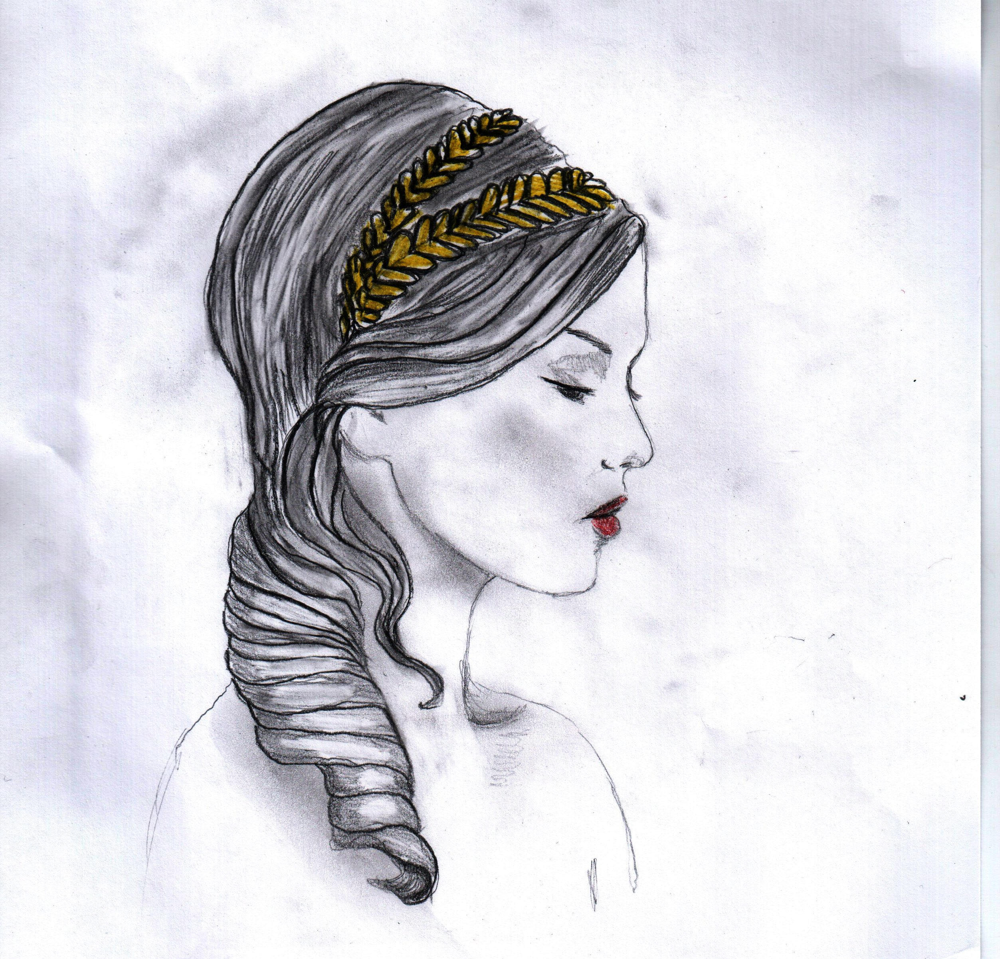

Korán beköszöntött a nyár. A szél friss víz illatát hozta a folyó felől az aquincumi légiótáborba. Végigszaladt a Thermae Maiores és a kórház falai között, a parancsnokság épületénél jobbra fordult, végül hatalmas porfelleget kavarva szabadult ki a kaszárnyák és házak fogságából, hogy az északi kapun át a katonaváros előkelő része felé vegye az irányt. 1.
Megtorpant egy fényűző palota előtt, átlépte a kőkerítést, és felkapta a földön heverő virágszirmokat. Pár pillanattal később orgona- és rózsaszirmok keringtek az éles napfényben a kert fái között. A szél mosolyogva csodálta a színek kavalkádját, de hamar megunta a játékot. Már arra gondolt, hogy a hegyek messze kéklő lejtői és a szőlőtőkék végtelen sorai várják. Mielőtt elillant, a virágszirmokat a kertben álló kis ház falához fújta, néhányat pedig az épületbe repített egy nyitott ablakon át. A szirmok tétován lebegtek a fürdő illatszerektől terhes levegőjében, mielőtt leereszkedtek az öltöző mozaikpadlójára.
Három nő volt a helyiségben. A legidősebb talán harminc éves lehetett, fekete haját összefogva, lepedőbe burkolt testtel ült az ablak melletti padon. Az öltöző közepén néhány évvel fiatalabb nő hasalt egy kereveten, mellette rövid gyolcsruhában és fapapucsban barna bőrű lány állt. A szolgáló egy üvegfiolából olívaolaj és menta keverékét csepegtetett a kezére, odaadó szakértelemmel masszírozott. Ujjai fürgén, mégis erőteljesen járták be a meztelen testet.
– Az istenek szeretnek, Aelia – mondta a fekete hajú nő nagyot sóhajtva, hátát a falnak vetette.
– Ugyan, Lucilla! Fiatal vagy és szép, bőröd, mint az alabástrom, nem lehet okod panaszra.
– Tudom, hogy már nem vagyok a régi. A mellem megereszkedett, a csípőm szélesebb a kelleténél, de a te tested még mindig tökéletes, mintha Venust látnám – egy pillanatra elhallgatott. – Mit szólsz Veneriához? Ugye, milyen csinos? Fiatal kora ellenére kimondottan ügyes, nem hiába került hatezer sestertiusba. Több hétig kellett udvarolnom a fürdőmesternek, míg ráállt az alkura, aztán már csak Antoniust kellett meggyőznöm, ami – mondanom sem kell – sokkal egyszerűbb volt. – Lucilla szája szélén cinkos mosoly játszott. – Ez a lány mestere a szakmájának, nemcsak ellazít, de el is kényeztet, csak egy szavadba kerül.
– Elmúltak azok az idők, Lucilla – nevetett Aelia. – Fiatal voltam és kíváncsi, borítsunk rá fátylat. Sappho verseit ma már inkább énekelni szeretem, mintsem megélni. Titus oldalán megtaláltam az igazi szerelmet, ahogy te is ráleltél Antoniusra, nem igaz?
Lucilla a virágzó kertet fürkészte a nyitott ablakon át, a kelleténél hosszabb ideig gondolkodott, mielőtt igennel válaszolt, végül tekintete a mozaikpadlón állapodott meg. Az apodyteriumot burkoló mozaik ökölvívó párt ábrázolt: a győztes izmait megfeszítve, diadalmas testtartásban pózolt, míg ellenfele vérző fejjel a földre rogyott. Mindkettőjük kezét szögekkel kivert szalagok borították. A padlón a pajkos szél jóvoltából most vörös virágszirmok hevertek.
– Lásd, a szelek istene, Aeolus kedvel téged, virágokat hintett a lábaid elé – mutatott rájuk mosolyogva.
– Az én múzsám Apollo és Amor. Az atléták istene Hercules, inkább ő küldte a szirmokat.
– Lehetne vér is – tűnődött Lucilla, és ismét halvány mosoly jelent meg az arcán.
– Ne mondj ilyet, megijesztesz! Örülj inkább, Floralia ünnepe van, az egész város felbolydult, este vendégséget adsz, ma nem illik búslakodnod. Hozz innunk! – szólt hirtelen a szolgálóhoz, aki a sarokban álló asztalkához lépett, és a kancsóból vizet töltött egy-egy üvegpohárba.
– Az ilyen cirkusz a pórnépnek való – jelentette ki Lucilla lekezelően, miközben elvette a felé nyújtott poharat. – Hiába a sok virág és a színes felvonulás, a végén a csőcselék otromba és részeg tivornyájába fullad az ünnep.
Aelia arcán meglepetéssel vegyes csodálkozás futott át, hangjában érezni lehetett a neheztelést.
– Régen másként beszéltél, sőt kifejezetten szeretted az ünnepségeket. Amikor Antonius nőül vett, kérkedtél, hogy személyre szóló helyed lesz az amfiteátrumban.
– Gyerekek voltunk.
– És barátok.
– Igen, jó barátok véd- és dacszövetségben, akik megosztottak egymással minden titkot, bánatot és örömöt. Emlékszel? Együtt nőttünk fel, együtt jártunk le a folyóhoz játszani. És ennek a szövetségnek volt tagja Titus is, aki… – Lucilla hangja megbicsaklott, éjbarna szemeiből eltűnt minden melegség. Az öltöző falai között érezhetően nőtt a feszültség. Aelia felnyögött és felült.
– Jaj, ne kezdd már megint! – csattant fel, de barátnője meg sem hallotta szavait.
– … aki téged választott.
Aelia egyetlen intéssel kiküldte a szolgálót.
– Folytasd csak, magunk maradtunk! – meztelen testét elöntötte a forróság, a rámeredő tekintettől mégis megborzongott. – Ezerszer megbeszéltük. Ámor nyila nekem adta Titust, a te családod viszont a vagyont és befolyást tartotta előbbre. Antonius lett a te embered, a helytartói palota egyik legbefolyásosabb tagja, akit a császár a pénzügyek kezelésével bízott meg. Csak csettintesz, és ő megadja neked, amit csak akarsz, édes Lucillám. És te elég okos nő vagy, hogy ezt kihasználd.
Lucilla tekintete továbbra is fagyos maradt, csupán egy apró izom rándult meg az arcán.
– Igazad van. Megszerzem, amit akarok, sőt azt is, amiről te álmodni sem mersz. Egy percig sem élnék abban a szerény hajlékban, ahová téged vetett a sors.
– Milyen cinikus vagy! – robbant ki a válasz Aeliából. – Apró ház, de nekem megfelel, ha pedig valami hiányzik, Titus szerelme kárpótol mindenért.
– Semmit nem tudsz az életről, Aelia Sabina! – kiáltott a fekete hajú nő, majd ellökve magát a faltól, felállt, lekapta a teste köré csavart lepedőt, néhány lépéssel a medencénél termett, és elmerült a vízben. Hirtelen csend vette körül, a víz hidege átjárta a bőrét, az izmait, egészen a csontokig hatolt. Nem emlékezett rá, hogy a hideg ennyire fáj. A sokktól kijózanodott. Néhány hosszúra nyúlt pillanat telt el, míg levegő után kapkodva kiemelkedett a vízből, majd az öltöző sarkában álló asztalhoz ment, és nagyot húzott a vizeskancsóból. Mintha mi sem történt volna, kedélyes hangon folytatta: – Az esti ünnepségre hozattam ezt a vizet a Lacus Pelso északi partján feltörő forrásból – bökte oda mintegy mellékesen a csodálkozó Aeliának. Veneriától átvette a lepedőt, és elindult kifelé. – Valamit mutatni akarok, mielőtt megérkeznek a vendégek – mondta, azzal hátra se nézve kilépett a fürdőház ajtaján. Aelia kisvártatva követte.
Ligeti Blanka illusztrációja
Az átriumban a család őseinek tiszteletére emelt házioltár várta őket, az apró szobrok között néhány mécses és füstölő égett. A palota tucatnyi helyiségében szolgálók sürögtek-forogtak, készültek az estére. Lucilla kézen fogta Aeliát, és a félköríves fogadóteremmel szemközti épületszárnyba vezette. Több egymásból nyíló szobán áthaladva egy csukott ajtóhoz értek. – Kíváncsi vagyok, mit szólsz – mondta izgatottan, és kinyitotta az ajtót. Aelia döbbenten nézett körbe. A helyiség, ami szürke és kicsi lyukként élt emlékezetében, egy módos és befolyásos ember dolgozószobájává vált. A fakazettás mennyezetről kör alakú réz mécsestartó lógott. A falakat bíbor színre festették, a lábazat és néhány függőleges sáv éjfekete volt, amelyeket zöld növényi motívumok és fehér darvak díszítettek. A padlót a többi szobához hasonlóan mozaik borította, a bútorokat úgy rendezték el, hogy a mozaik közepén lévő képet egy se takarja el. Fából készült asztal, néhány szék, az iratok tárolására szolgáló nyitott polc és egy láda volt az összes berendezés.
– Lenyűgöző! – mondta Aelia őszintén. – Igazán büszke lehetsz rá.
– Az is vagyok. Most újítottuk fel a fogadótermet és a szobát, de először ezt kell látnod – mutatott a mozaikpadlóra. – A fogadótermet ráérünk később megnézni – tette hozzá.
Aelia tekintete a padlón kibontakozó képre vándorolt. – A múlt hónapban hozattam Alexandriából. Gondolj csak bele, micsoda munka lehetett, azt mondják, hatvanezer színes kőlapocskából áll – büszkélkedett Lucilla.
A kép Hercules és Deianira történetét ábrázolta. A jól ismert monda szerint Hercules és ifjú felesége, Deianira az Euenus folyóhoz érkezett, amelyen – híd és csónak hiányában – a kentaur Nessus szállította át az utasokat, egyesével. A félig ember, félig állat teremtmény azonban nem bírta legyőzni vágyát, és a folyó közepén erőszakoskodni kezdett Deianirával. Hercules, Nessus tettét látva, felajzotta íját, és egy mérgezett nyíllal lelőtte a kentaurt.
– Mesteri munka, ámulatba ejtő! – mondta Aelia eltűnődő hangon.
– Tudtam, hogy tetszeni fog – ujjongott Lucilla. – Emlékszel a történet végére? A haldokló Nessus utolsó erejével megsúgta az ifjú feleségnek, hogy vére varázserővel rendelkezik, és örökre megőrzi számára Hercules szívét.
– Deianira pedig hitt neki.
– Így igaz. Amikor Hercules hosszú ideig távol volt, a hírek szerint nem vetette meg a fehérnép társaságát. Deianira féltékenységében egy inget küldött urának, melyet alvadt vérrel festett bíborszínűre. Hercules felöltötte az inget, ami a nap sugaraitól lángra kapott, és élve elégette. – Lucilla igyekezett titokzatos képet vágni. – Nézd meg jobban, nem veszel észre valamit?
Aelia közelebb lépett, alaposan szemügyre vette a képet, és lassan derengeni kezdett neki valami. Maga elé emelte a kezét, igyekezett úgy tartani, hogy a ráeső fényben jobban lássa az ujján lévő drágaköves gyűrűbe vésett arc körvonalait. A képre nézett, majd újra a gyűrűre, és elmosolyodott. – Caracalla. – A férfi a múltból, a császár, akivel csak egyszer találkozott, örökre megváltoztatta az életét. Tíz esztendős sem volt, amikor egy este érte jöttek, a szigeten álló palotába vitték. Szorgos kezek megfürdették, tiszta ruhát adtak rá, és hosszú várakozás után egy zajos terembe lökték. Idegen és részeg emberek vették körül. Énekelni kezdett. Mire végzett, minden szempár rászegeződött. Tétován meghajolt, s mire felegyenesedett, egy férfi állt előtte. Rámosolyodott, megsimogatta a fejét, és a többiek felé fordulva, fennhangon kijelentette, hogy Augustus szerint áldott a gyermek, mert hangja az istenektől való, majd egy gyűrűt adott neki. – A császár küldi – mondta az egyik kereveten fekvő, szakállas férfira pillantva. – Őrizd meg! Hatalmas kegy, egyszer majd megérted.
– Látom, emlékszel – mondta Lucilla jelentőségteljesen. – A császár, akinek oly sokat köszönhetünk, megérdemli, hogy megőrizzük az arcvonásait.
– Igazad van, az ötlet kissé bizarr, de tetszik – válaszolta Aelia.
– Akkor már csak választanod kell, mint gyerekkorunkban, amikor mesét hallgattunk. Emlékszel? Egymás szavába vágva kiabáltuk, hogy melyik hős szerettünk volna lenni. Nos? Ha választhatnál, Hercules és Deianira történetében ki lennél?
Aeliát váratlanul érte a kérdés, elgondolkodott egy pillanatra, majd csodálkozó arccal vállat vont.
– Rendben, hagylak, de ha nem haragszol, vár rám még néhány elintéznivaló, mielőtt megérkeznek a vendégek, és át is kell öltöznöm – mentette ki magát Lucilla. – Addig érezd otthon magad, pihenj! Hozatok étel, italt, szamoszi bort, amely édes, mint a nektár. Mindenképp kóstold meg! Mindjárt hozzák a lantod is, és ha Titus megérkezik, egyenesen hozzád küldetem – Lucilla sarkon fordult, kiviharzott a teremből. Vizes lábnyomok maradtak utána a mozaikpadlón.
Aelia megbabonázva nézte Hercules és Deianira történetét. Lelki szemei előtt újból és újból leperegtek a mitológiai események, észre sem vette, amikor a szolgák behozták a frissítőket. Csupán a kedvenc hangszerére lett figyelmes, amit valaki egy szék karfájának támasztott. A lant után nyúlt, a hangszer hűvösen simult a tenyerébe. Halkan pengetni kezdett, dúdolt hozzá, majd lassan formát öntött a dallam és ritmusára a gondolatok. Mire megnyúltak az árnyak a kertben, szinte maguktól összeálltak a strófák és a versszakok – megszületett egy új dal.
2.
A lebukó nap sugarai vörösre festették az eget, mintha Vulcanus, a kovácsok istene tüzet rakott volna a hatalmas hegygerinc mögött. A felhők ijedtükben a folyó irányába menekültek, de mire elhamvadt a parázs, kitisztult az égbolt, megjelentek az első csillagok, és a házak ablakaiban világosság gyúlt.
A sötétség beálltával a palota bejáratát és a házig vezető utat földbe szúrt fáklyák sora jelezte. A félköríves fogadóterem zsúfolásig megtelt színes ünneplőruhába öltözött vendégekkel. Vagyonokat érő keleti illatszerek felhője kavargott a levegőben. A gondosan válogatott, illusztris társaság tagjai magasított kereveteken foglaltak helyet, melyek között gyümölcsöktől és ételektől roskadozó asztalkák sorakoztak. Minden kerevet alatt egy-egy üres cserépedény állt. A mennyezetről lelógó mécsesek fénybe borították a termet, amelynek világos falát énekesmadarakkal és vízinövényekkel díszített bíbor sávok tagoltak.
A házigazda örömmel üdvözölte az egybegyűlteket, külön köszöntötte Caius Iulius Viatorinust, a tűzoltótestület elnökét, aki a saját költségén készíttette el egész Pannónia büszkeségét, a terem félköríves végén álló víziorgonát. Örömének adott hangot, hogy mindenki elfogadta a meghívást, aki e zajos nap után megnyugvásra, elcsendesedésre, művészetre és nem utolsó sorban kulináris élvezetekre vágyott. Biztosította a hallgatóságot a fácán és a vaddisznó kiváló ízéről, a hegy borainak zamatáról, nem mellékesen megemlítve a gyógyerővel bíró forrásvizet, melyet felesége a mai alkalomra hozatott. Majd bemutatta az este fellépőit: a II. légió orgonistáját, Titus Aelius Iustust és bájos feleségét, az énekesnő Aelia Sabinát.
Titus az orgonához lépett, a beálló csendben egy pillanatra lehunyta szemét, és játszani kezdett; ujjai lassan, szinte komótosan jártak a billentyűkön. Az életre kelt bronzsípok távoli múlt ködébe vesző dallamot idéztek, az ősi naphimnusz, mint egy hideg fuvallat, borzongással töltötte el a hallgatóságot.
Az egyik tanácsnok igazgatni kezdte a tógáját, zavarában körbe-körbe pillantott, végül tekintete a mozaikpadlóra vándorolt. A lába alatti képen a Dionüszosz tiszteletére rendezett szüreti menet elevenedett meg. A részegen tántorgó Herculest ketten is támogatták, mellettük bacchánsnők és szatírok táncoltak. A tanácsnok a poharáért nyúlt, úgy vélte, ez az élvezet ma este neki is megfelel.
Valaki halkan megjegyezte, Nero idejében az ünnepségeken huszonnyolc orgona is megszólalt egyszerre, a dolgot csak az súlyosbította, hogy a császár ilyenkor előszeretettel énekelt. – Ez most nem fordulhat elő – kacsintott, és a kerevet alatti edénybe hányt.
A közönség tapssal jutalmazta Titus játékát, de amikor felesége mellé lépett, hogy közösen előadjanak egy dalt, hangos éljenzés tört ki. Aelia túlvilági tünemény volt egyszerű kék ruhájában, arany övvel a derekán, fényes diadémmal a hajában, az ujján Caracalla gyűrűjével. Alakjából szinte áradt a szépség és a báj. Megjelentére a vendégek abbahagyták az evést-ivást, a halk suttogást, minden figyelmüket a huszonöt éves énekesnőnek szentelték. Aelia először Sappho szerelmes dalát énekelte, majd Catullus híres Lesbia dala következett.
A közönség hangos tapssal és éljenzéssel éltette a házaspárt. Mire újra csönd telepedett a teremre, Aelia egyedül állt a terem félköríves végén, ahol a mozaikpadló egy szőlőlugasban sétáló tigrist ábrázolt. Az énekesnő leült egy székre, kezébe vette lantját, egy pillanatra elgondolkodott, mielőtt megszólalt.
– A következő dal délután született, elsőként ti hallgathatjátok meg. Fogadjátok szeretettel! – ezzel lehunyta szemét, mély lélegzetet vett; hangja betöltötte a levegőt.
A dal maga volt a varázslat, felidézte Hercules és Deianira szerelmét, a féltékenységet, Nessus bosszúját, s mire véget ért, kétoldalt könnyek folytak le Aelia arcán. Tompa csend ült a teremre. Egy könnycsepp a néma húrokra hullt.
Az énekesnő felocsúdott, a hangszert maga mellé helyezte, felállt. A kirobbanó taps közben letörölte arcáról a könnyeket, boldog, de zavart mosollyal meghajolt, és a kert irányába kirohant a teremből. Titus követni akarta, de Lucilla a karjánál visszafogta. – Hagyd egy kicsit egyedül, mindjárt jobban lesz! – A férfi tétovázott néhány pillanatig, majd Aelia után sietett. A lobogó fáklyák fényénél szólongatta feleségét, de nem érkezett válasz. Az egyik fáklyát kivette a tartóból, körbejárta a kertet, de egy lelket sem talált, csak a vendégség zaja szűrődött ki a nyitott ablakokon át. Csalódottan tért vissza a házba. Az aulában Veneriával futott össze, aki a fogadóteremmel szemközti épületszárny felől érkezett, egy üvegfiola csillant a kezében, amit épp a ruhája mélyére csúsztatott. Azt mondta, látta néhány perce a kertből visszatérni Aeliát, de fogalma sincs, merre lehet. Talán kérdezzék meg a többieket. Titus szobáról szobára járt. A hátsó dolgozószobában talált rá kedvesére. Aelia arccal a hűvös padlón feküdt, szájából habos vér szivárgott, fejéről a diadém az egyik sarokba gurult, mellette összetört borospohár hevert.
A férfi odarohant hozzá, és letérdelt. Aelia próbálta felemelni a fejét, megfordulni, de hiába. Titus a válla alá nyúlt, az oldalára fektette. A nő zihált, hörgött, zavaros tekintete a távolba meredt, majd lehunyta a szemét. Titus ruhája szegélyével letörölte felesége sápadt arcáról a vért, félresöpörte a szemébe lógó tincseket, szólongatta, gyengéden rázta.
– Aelia!… Ébredj!… Mi van veled? – Titus tekintete kétségbeesetten vándorolt a berendezési tárgyakon, valamiféle megoldás után kutatott. Tehetetlennek érezte magát. Végső elkeseredésében segítségért kiáltott.
Lucilla jelent meg az ajtóban Veneriával az oldalán. A földön fekvő Aeliához futott, és a férfival szemben, a másik oldalról mellé térdelt.
– Óh, istenek! Mi történt…, mi történt? – hajtogatta, de választ nem kapott, csak újabb hörgés hagyta el Aelia ajkát. – Veneria! – szólt a szolgálóhoz. – Rohanj a kórházba Sextus Pompeius Carpusért. Mondd, hogy én kéretem, de azonnal! – Veneria szó nélkül sarkon fordult, és a medicusért szaladt. Lucilla a lebénult Titushoz fordult. – Hozz vizet, itassuk meg! – mondta ellentmondást nem tűrő hangon. – Tetess fel vizet forralni a konyhán, szükség lehet rá, ha a medicus eret vág. A férfi megszeppenve engedelmeskedett az utasításnak, az asztalon álló kancsóból vizet hozott, majd elsietett a konyha irányába.
Aelia kinyitotta a szemét, tekintete lassan kitisztult. Összeszorított ajkakkal elutasította a vizet, megpróbált feltápászkodni. – Maradj nyugton, ne mozogj! – csitította Lucilla, és szelíden visszanyomta a földre. Aelia hirtelen mindkét kézzel megragadta Lucillát, és magához húzta. A nő alig értette az elhaló szavakat.
– Tudom már – suttogta.
– Miről beszélsz? – kérdezte Lucilla meglepetten, a választ azonban nem értette, közelebb kellett hajolnia, úgy fülelt.
– Mint gyerekkorunkban…, amikor választottunk…, itt alattam…, a képen…
– Mit tudsz?
– Tudom, ki vagy.
– Ne erőlködj, kifáraszt a beszéd! – Aelia nem törődött a felszólítással.
– Te vagy Nessus, a kentaur.
– Ugyan már, az csak mese, gyerekes játék! – tiltakozott Lucilla.
– Ez az igazság! Bosszú vagy, métely – zihált Aelia. – Légy átkozott!
Lucilla szeme feketén villámlott.
– Nem tudsz te semmit, Aelia Sabina! – válaszolta eszelős dühvel, miközben nyála fröcsögve szállt a levegőben. Megpróbált felegyenesedni, de Aelia összekulcsolta ujjait, és utolsó erejével visszatartotta.
– Lehet, hogy az életről keveset tudok, de az igaz szerelmet ismerem, hidd el – suttogta. Akármiben mesterkedsz, ő soha nem lesz a tiéd.
– Majd meglátjuk – sziszegte a fogai között Lucilla, miközben lefejtette magáról Aelia kezét. Barátnője szája még mozgott, amikor felállt.
Titus néhány szolgálóval, forró vizes edényekkel és tiszta lepedőkkel felpakolva tért vissza. Aeliát óvatosan felemelték, a szomszéd hálószobába vitték, és ágyba fektették. A nő vacogott, fogai össze-össze koccantak. Férje az ágy szélére ült, és a keze ügyébe került takaróval gondosan betakarta.
– Nem érzem a végtagjaim – suttogta Aelia. Elhaló hangja alig volt több, mint az ajkain kiáramló meleg levegő. – Hajolj közelebb! – kérte. – Még!
Titus, amennyire lehetett, közel hajolt, és lélegzetvisszafojtva figyelt. A hosszúra nyúlt csendben Aelia kapkodva vette a levegőt, majd felnyögött, szája sarkán újabb vércsík buggyant elő. – Vigyázz vele! – hörögte, és elvesztette eszméletét.
3.
Aznap éjjel újra feltámadt a szél, füstszagot hozott a légiótábor felől, végigszaladt a kaszárnyák és a tribunusok házai között, majd a katonaváros előkelő épületei felé vette az irányt. Ismerősként köszöntötte a palotát, átugrotta a kerítést, eljátszott a bejáratot és utat szegélyező fáklyák lángjaival, majd nevetve felkapta a fürdőépület falánál felhalmozott virágszirmokat. A libbenő fényben körbejárta a házat, bekukkantott az ablakokon. Látta az előkelő és részeg vendégeket, a konyhában sürgölődő szolgák hadát, a hálószobához érve azonban megállt.
Sextus Pompeius Carpus az ágy mellett állt, óvatosan megszagolta a borospohár maradványait, majd Aelia ajkai fölé hajolt. Lemondóan széttárta a kezét, majd Aelia friss vágásokkal csúfított karját, mely élettelenül lógott le az ágyról, a test mellé helyezte, és lecsukta a halott szemét. Titus zokogva borult kedvesére, de ahogy ő, a szél sem értette, mi történt.
Csak Lucilla tudta az igazat. Kezét a férfi vállára téve próbálta megnyugtatni, de hasztalan.
– Még eljön az én időm – gondolta magában, véres kezét egy tiszta lepedőbe törölte, és visszament a vendégekhez. Nem látta, amint a vörös rózsaszirmok berepültek az ablakon, és elborították a szobát.